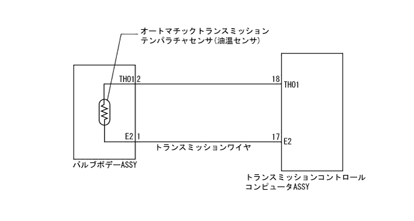
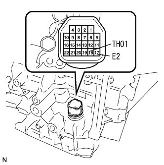

DTC P0711/38 Fluid Temperature Sensor Circuit (Range Error) |
| DTC No. SAE/TCCS | DTC Detection Conditions 1. Diagnosis conditions 2. Malfunction status 3. Malfunction duration 4. Other | Inspection Area |
|---|---|---|
| P0711/38 |
|
|

| Step 1 | Check DTC |
Using SST (TaSCAN), follow the prompts on the screen to display the [Diagnosis Menu/ECT] screen, and select [DTC Freeze Data].
Check the DTCs and freeze frame data.
| Result | Proceed to |
|---|---|
| Only P0711 is output | A |
| DTCs other than P0711 are output | B |
|
| ||||
| A | |
| Step 2 | Inspect Automatic Transaxle Fluid Level |
Check the automatic transaxle fluid level.
|
| ||||
| OK | |
| Step 3 | Inspect Transmission Wire |
ReferenceRemove the transmission control computer. (see)
Check that the connector cases and terminals of the transmission control computer and transmission wire are not deformed or damaged.
 |
Using SST (Toyota electrical tester), measure the resistance between the terminals.
| Tester Connection (Terminal Symbol) | Condition | Standard |
|---|---|---|
| 18(THO1) - 17(E2) | Fluid temperature 10°C | 5 to 8kΩ |
| 18(THO1) - 17(E2) | Fluid temperature 110°C | 0.22 to 0.28kΩ |
Using SST (Toyota electrical tester), measure the resistance between the terminals.
| Tester Connection (Terminal Symbol) | Condition | Standard |
|---|---|---|
| 18 (THO1) - Body ground | Always | 10k Ω or higher |
|
| ||||
| OK | |
| Step 4 | Replace Transmission Control Computer Assembly |
Replace the transmission control computer assembly. (see)
| NEXT | ||
| ||
| Step 5 | Inspect Automatic Transmission Temperature Sensor |
Disconnect the automatic transmission temperature sensor connector.
Check that the connector case and terminals of the automatic transmission temperature sensor are not deformed or damaged.
 |
Using SST (Toyota electrical tester), measure the resistance between the terminals.
| Tester Connection (Terminal Symbol) | Condition | Standard |
|---|---|---|
| 2(THO1) - 1(E2) | Fluid temperature 10°C | 5 to 8kΩ |
| 2(THO1) - 1(E2) | Fluid temperature 110°C | 0.22 to 0.28kΩ |
Using SST (Toyota electrical tester), measure the resistance between the terminals.
| Tester Connection (Terminal Symbol) | Condition | Standard |
|---|---|---|
| 2 (THO1) - Body ground | Always | 10k Ω or higher |
|
| ||||
| OK | ||
| ||